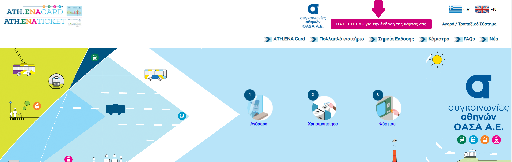

Υπό την προϋπόθεση ότι έχουμε κάποιο έγγραφο που να πιστοποιεί την φοιτητική μας ιδιότητα (πχ ΠΑΣΟ).
Μπαίνουμε στην ιστοσελίδα https://athenacard.gr και πατάμε στο "ΠΑΤΗΣΤΕ ΕΔΩ για την έκδοση της κάρτας σας".
Επιλέγουμε τον τρόπο παραλαβής της κάρτας
Συμπληρώνοντας την φόρμα παραλαβής από το εκδοτήριο δημιουργείται κωδικός QR, τον οποίο θα πρέπει να εκτυπώσετε και να επιδείξετε στον εκδότη για την παραλαβή της ATH.ENA κάρτας σας.
Συμπληρώνοντας την φόρμα ταχυδρομικής παραλαβής επιλέγετε την κατηγορία "Τριτοβάθμια Εκπαίδευση" στην "Κατηγορία δικαιούχου" και επισυνάπτετε μια φωτογραφία προσώπου που θα τυπωθεί πάνω στην προσωποποιημένη κάρτα και την φοιτητική ταυτότητα/ΠΑΣΟ.
Σημείωση: Σύμφωνα με την επιστολή στην πηγή, ο φοιτητής μπορεί να επισυνάψει το πιστοποιητικό φοιτητικής ιδιότητας που έχει λάβει από την γραμματεία αν δεν έχει παραλάβει το ΠΑΣΟ ακόμη. Επικοινωνήστε με τον ΟΑΣΑ για να το επιβεβαιώσετε.
Πηγή: https://www.di.uoa.gr/sites/default/files/2020-09/559 ΠΡ-ΔΣ_ΔΙΑΧΕΙΡΙΣΗ ΔΙΚΑΙΩΜΑΤΟΣ ΜΕΤΑΚΙΝΗΣΗΣ_ΦΟΙΤΗΤΕΣ ΑΕΙ ΑΚΑΔΗΜ ΕΤΟΥΣ 2020-21.pdf